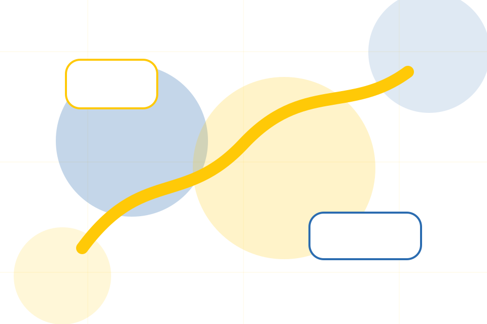
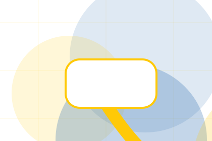
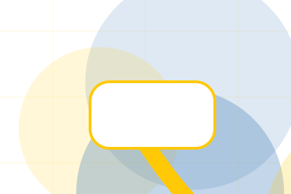
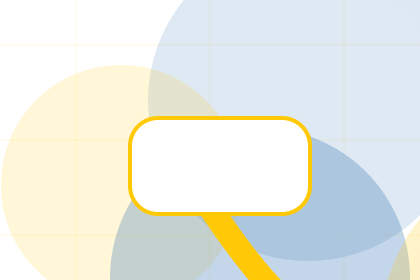
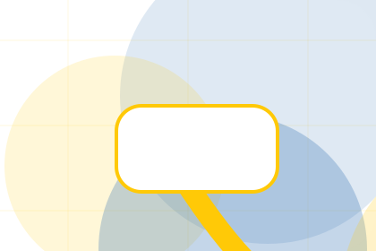
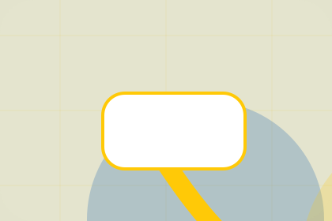

Impact / 01
Impact by Good
Impact shaped for nonprofit, charity & social impact decisions.
Impact opens as a clear nonprofit decision hub: what Good offers, who it helps, why it matters, and which route to take first.
The first screen combines positioning, proof, primary action, and fast internal navigation, so people can act immediately or compare the rest of the impact route with context.
Nonprofit scopeCompare optionsRequest advice
Yellow impact hero
Choose an impact route
Select the closest route and Good keeps the next step, proof, and follow-up expectation aligned with trust and contribution.

Impact / 03
Outcomes
Outcomes shows what changes after the work: clearer decisions, visible progress, and proof points that connect the offer to real outcomes.
The layout connects before-and-after thinking with measured outcomes, making the result easy to scan without promising what the business cannot guarantee.
Explore ImpactBefore
The uncertainty, delay, or missed opportunity visitors bring into outcomes.
After
The clearer, safer, or more valuable state Good is designed to support.

Proof
The visible cue that connects outcomes to a believable decision, not a loose claim.
Impact / 04
Reports
Reports shows what changes after the work: clearer decisions, visible progress, and proof points that connect the offer to real outcomes.
The layout connects before-and-after thinking with measured outcomes, making the result easy to scan without promising what the business cannot guarantee.
Explore ImpactThe uncertainty, delay, or missed opportunity visitors bring into reports.
The clearer, safer, or more valuable state Good is designed to support.
The visible cue that connects reports to a believable decision, not a loose claim.
Good reports guide
The uncertainty, delay, or missed opportunity visitors bring into reports.
Open resourceGood reports checklist
The clearer, safer, or more valuable state Good is designed to support.
Open resource
BriefGood reports brief
The visible cue that connects reports to a believable decision, not a loose claim.
Open resourceImpact / 05
People
People shows what changes after the work: clearer decisions, visible progress, and proof points that connect the offer to real outcomes.
The layout connects before-and-after thinking with measured outcomes, making the result easy to scan without promising what the business cannot guarantee.
Explore Impact- 01
Before
The uncertainty, delay, or missed opportunity visitors bring into people.
- 02
After
The clearer, safer, or more valuable state Good is designed to support.
- 03
Proof
The visible cue that connects people to a believable decision, not a loose claim.
Impact / 06
Community
Community shows what changes after the work: clearer decisions, visible progress, and proof points that connect the offer to real outcomes.
The layout connects before-and-after thinking with measured outcomes, making the result easy to scan without promising what the business cannot guarantee.
Explore ImpactGood structures community around before, after, and a clear next route so visitors can compare the block quickly before they donate today.
Donate TodayImpact / 07
Transparency
Transparency shows what changes after the work: clearer decisions, visible progress, and proof points that connect the offer to real outcomes.
The layout connects before-and-after thinking with measured outcomes, making the result easy to scan without promising what the business cannot guarantee.
Explore Impact

Before
The uncertainty, delay, or missed opportunity visitors bring into transparency.
Impact / 08
Proof
Proof shows what changes after the work: clearer decisions, visible progress, and proof points that connect the offer to real outcomes.
The layout connects before-and-after thinking with measured outcomes, making the result easy to scan without promising what the business cannot guarantee.
Explore ImpactThe uncertainty, delay, or missed opportunity visitors bring into proof.
The clearer, safer, or more valuable state Good is designed to support.
The visible cue that connects proof to a believable decision, not a loose claim.
Impact / 09
Donate
Donate shows what changes after the work: clearer decisions, visible progress, and proof points that connect the offer to real outcomes.
The layout connects before-and-after thinking with measured outcomes, making the result easy to scan without promising what the business cannot guarantee.
Explore ImpactThe uncertainty, delay, or missed opportunity visitors bring into donate.
The clearer, safer, or more valuable state Good is designed to support.
The visible cue that connects donate to a believable decision, not a loose claim.
Yellow impact hero
Choose an impact route
Select the closest route and Good keeps the next step, proof, and follow-up expectation aligned with trust and contribution.
Impact / 10
Donate Today
Good closes the impact route with a clear action, a quick reminder of the value, and a low-friction way to donate today.
Visitors who are ready can use the primary action. Visitors who are still comparing can scan the section links, proof, and support routes before they donate today.
Donate TodayThe final block keeps the choice simple: act now, compare one more proof route, or send enough detail for a focused response.
Donate Todaytrust and contribution
Donate Today
A donor site with bold yellow impact modules, transparent metrics, story cards, and donation selector. Impact ends with a direct path to donate today, plus enough context for visitors who still need to compare.

Donate TodayNotes
Donation use statements must match governance records, reporting, and local fundraising rules.